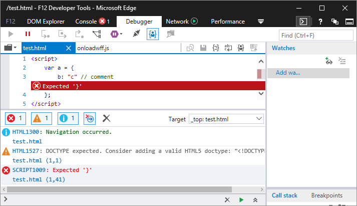

The http-server node module may handle CRLF differently than LF. This difference is reflected in HTTP server response headers—content-length specifically.
When Microsoft Edge attempts to parse JavaScript in of these CRLF files, it may encounter issues around some comments.
npm install -g http-server
mkdir project
cd project
http-server
<script>
var a = {
foo: "bar" // comment
};
</script>
In Visual Studio Code, press Ctrl+Shift+P, type "Change End of Line Sequence." Change to CRLF.
git clone https://github.com/jonathansampson/bugs.gitcd .\bugs\crlf-http-server-edge\npm run test/test.html to the end of the URLSee screenshot beneath Description for expectation.